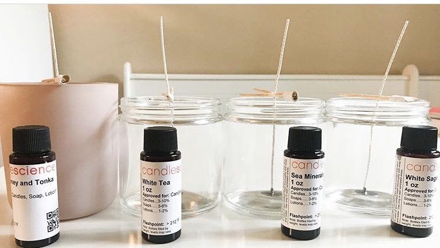

Juno Handcrafted
Juno Handcrafted
About
- All of our candle scents are from
Candle Science.
- All of our wax products come from The Flaming Candle ; a soy paraffin blend which is
a food grade quality wax without chemicals.
-
Our soap products come from
BrambleBerry
-
All wicks are from
Candle Science
-
For more information regarding what a hand poured candle is and how to safely burn
one of our hand poured candles. Please click
here.
For the latest products and deals please follow us on
Instagram!
